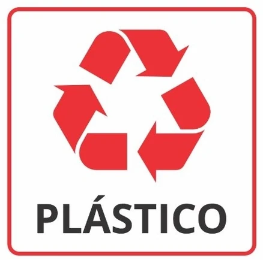

Esse site faz parte de um projeto escolar! cuja finalidade é
incentivar e também mostrar como e quais materiais
podem ou não serem reutilizados/reciclados.
Reconhecendo a importância da conscientização ambiental, buscamos fornecer informações claras e acessíveis para que todas as
pessoas possam tomar decisões informadas sobre o descarte correto de
resíduos e contribuir com a preservação do meio ambiente.
Materiais Que Podem Ser Reciclados:
Nem todos os materiais podem ser reciclados, mas neste primeiro
momento iremos ver quais podem e devem ser
reciclados. Abaixo segue a lista desses materiais:
Azul - Papel e
Papelão
Vermelho
- Plástico
Verde - Vidro
Amarelo - Metais
Marrom
- Resíduos Orgânicos
Preto - Madeira
Como Podemos Reciclar o Plástico?
O processo de reciclagem de plástico envolve várias etapas importantes. Primeiro, os materiais plásticos são coletados e triados por tipo e cor. Depois, eles são limpos e triturados em pequenos pedaços chamados "flakes". Em seguida, os flakes são lavados e derretidos em altas temperaturas para formar um líquido conhecido como "resina". A resina é então moldada em diferentes formas, como grânulos ou pellets, que podem ser usados para produzir novos produtos de plástico.
Existem vários tipos de plásticos, cada um com propriedades e aplicações específicas, e a reciclagem de cada tipo pode exigir processos diferentes. Por exemplo, alguns tipos de plástico, como o PET (polietileno tereftalato), são frequentemente usados em garrafas de refrigerante e requerem um processo de reciclagem diferente do PVC (policloreto de vinila), que é frequentemente usado em tubulações.

A reciclagem de plástico é importante porque o plástico é um material que não se decompõe facilmente na natureza e pode causar poluição do solo, água e ar. Além disso, a reciclagem de plástico pode ajudar a reduzir a quantidade de resíduos que vão para os aterros sanitários e economizar recursos naturais, já que a produção de plástico a partir de matérias-primas virgens pode ser bastante intensiva em energia e recursos.
Tempo de Decomposição do Plástico:
O tempo de decomposição do plástico varia dependendo do tipo de plástico e das condições ambientais em que é encontrado. Os plásticos são compostos de cadeias longas de polímeros, que são estruturas quimicamente estáveis e resistentes à decomposição biológica. Isso significa que muitos tipos de plástico podem levar centenas de anos ou mais para se decompor completamente na natureza.Aqui estão alguns exemplos aproximados do tempo de decomposição de diferentes tipos de plástico:
Plásticos PET (Polietileno Tereftalato): Entre 100 e 1.000 anos.
Plásticos HDPE (Polietileno de Alta Densidade): Entre 100 e 1.000 anos.
Plásticos PVC (Policloreto de Vinila): Entre 100 e 1.000 anos.
Plásticos LDPE (Polietileno de Baixa Densidade): Entre 100 e 500 anos.
Plásticos PP (Polipropileno): Entre 100 e 1.000 anos.
Plásticos PS (Poliestireno): Entre 500 e 1.000 anos.
Vale ressaltar que mesmo quando o plástico se decompõe, ele se fragmenta em pequenos pedaços chamados microplásticos, que podem persistir no meio ambiente por um tempo ainda maior.
Como Podemos Reutilizar o Plástico?
A reciclagem de plástico é um processo que envolve a coleta, triagem, limpeza, trituração, derretimento e moldagem do plástico para produzir novos produtos. Cada tipo de plástico pode exigir um processo de reciclagem específico, devido às suas propriedades e aplicações únicas. A reciclagem de plástico é importante porque o plástico é um material que não se decompõe facilmente e pode causar poluição do solo, água e ar. Além disso, a reciclagem de plástico pode ajudar a reduzir a quantidade de resíduos que vão para os aterros sanitários e economizar recursos naturais.
Existem muitas maneiras de reutilizar o plástico em vez de descartá-lo. Algumas dessas maneiras incluem utilizar garrafas plásticas como recipientes, reutilizar potes de plástico, utilizar sacolas plásticas como sacos de lixo, utilizar o plástico em projetos de artesanato e utilizar tubos de PVC para fazer suportes e móveis. Ao reutilizar o plástico, podemos prolongar sua vida útil, reduzir a quantidade de resíduos que vão para os aterros sanitários e contribuir para a preservação do meio ambiente.